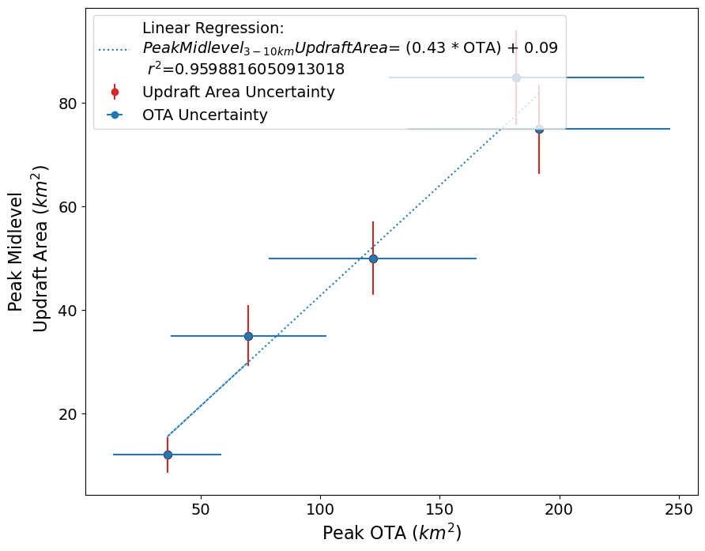

Overshooting Top Area - Updraft Area Uncertainty
Overshooting Top Area - Updraft Area Uncertainty¶
import numpy as np
import matplotlib.pyplot as plt
import pandas as pd
days = ['10 Nov', '12 Nov', '14 Dec']
ota = np.array([122, 36, 70])
ua = np.array([50, 12, 35])
ota_error = np.sqrt((16 * ota) - 64)
ua_error = np.sqrt((ua) - 0.25)
df = pd.DataFrame({'date':days,
'ota':ota,
'ua':ua,
'ota_error':ota_error,
'ua_error':ua_error})
df = df.sort_values('ota')
plt.figure(figsize=(10,8))
ax = plt.subplot(111)
ax.errorbar(df.ota, df.ua, yerr=df.ua_error, color='tab:red', fmt='o', label='Updraft Area Uncertainty')
ax.errorbar(df.ota, df.ua, xerr=df.ota_error, color='tab:blue', fmt='o', label='OTA Uncertainty')
ax.scatter(df.ota, df.ua, s=50, color='k')
plt.xticks(fontsize=14)
plt.yticks(fontsize=14)
plt.legend(loc='upper left', fontsize=14)
plt.xlabel('Peak OTA ($km^2$)', fontsize=16)
plt.ylabel(' Peak Midlevel \n Updraft Area ($km^2$)', fontsize=16)
plt.savefig('OTA_ua_error_scatter.png', dpi=300)

ua_error
array([7.05336799, 3.4278273 , 5.89491306])